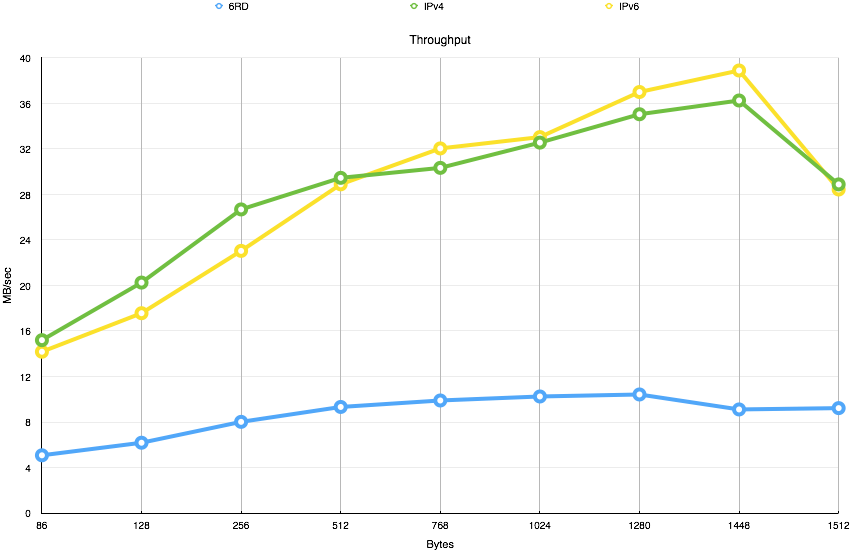
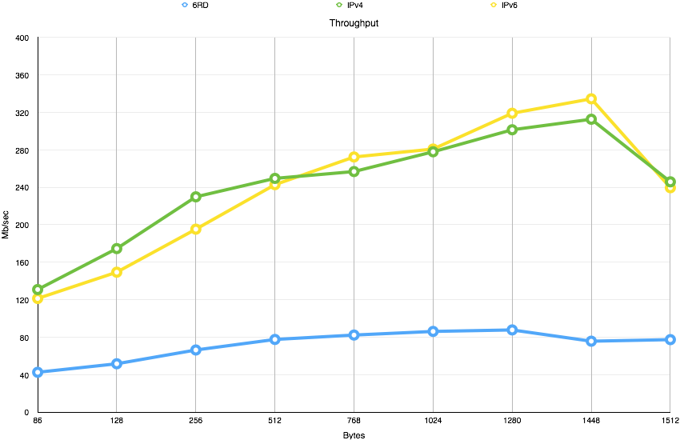
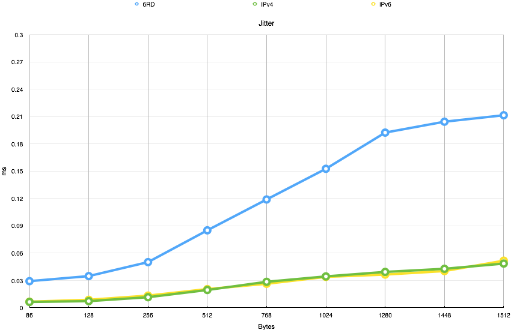

IPv6 Tunnels
Een project voor Netwerk Protocols
Door Ruben Vereecken en Ruben Mennes
Overzicht
- Inleiding
- Test methode
- Tests
- Resultaten
- Conclusies
Inleiding
Inleiding
Probleem
- IPv4 adressen zijn op.
- IPv6 is de oplossing
- Overgang van IPv4 naar IPv6 nodig
Mogelijke oplossingen
-
6to4
-
6RD
Hoe performant zijn deze oplossingen?
Test methode
Test methode
3 Test cases
- IPv4
- IPv6
- 6RD
6to4
Basis
IPv4

| eth0 | eth1 | |
|---|---|---|
| PC 1 | 10.0.1.1 | |
| PC 2 | 10.0.1.2 | 10.0.2.2 |
| PC 3 | 10.0.3.3 | 10.0.2.3 |
| PC 4 | 10.0.3.4 |
IPv6
| eth0 | eth1 | |
|---|---|---|
| PC 1 | 20fe::1:0:1 | |
| PC 2 | 20fe::1:0:2 | 20fe::2:0:2 |
| PC 3 | 20fe::3:0:3 | 20fe::2:0:3 |
| PC 4 | 20fe::3:0:4 |
6RD
| eth0 | eth1 | |
|---|---|---|
| PC 1 | 20fe::1:0:1 | |
| PC 2 | 20fe::1:0:2 | 10.0.2.2 |
| PC 3 | 20fe::3:0:3 | 10.0.2.3 |
| PC 4 | 20fe::3:0:4 |
Test methode
Kenmerken om te testen
- Lantecy (via ping)
- Throughput (via iPerf)
- Loss (via iPerf)
- Jitter (via iPerf)
Test methode
Test idee
- PC4 stuurt tegen 1000Mb/sec
- We kijken wat er toekomt bij PC1 gedurende 10 sec
- We gebruiken UDP met verschillende grote van data
- 86 bytes
- 128 bytes
- 256 bytes
- 512 bytes
- 768 bytes
- 1024 bytes
- 1280 bytes
- 1448 bytes
- 1518 bytes
Resultaten
Resultaten
Latency
| IPv4 | IPv6 | 6RD | ||
|---|---|---|---|---|
| Minimum | 0.554 ms | 0.742 ms | 0.754 ms | |
| Gemiddelde | 0.870 ms | 0.986 ms | 1.008 ms | |
| Maximum | 1.178 ms | 1.183 ms | 1.803 ms |
Resultaten
Throughput
Resultaten
Throughput
Resultaten
Ontvangen pakketten

Resultaten
Jitter
Resultaten
Loss